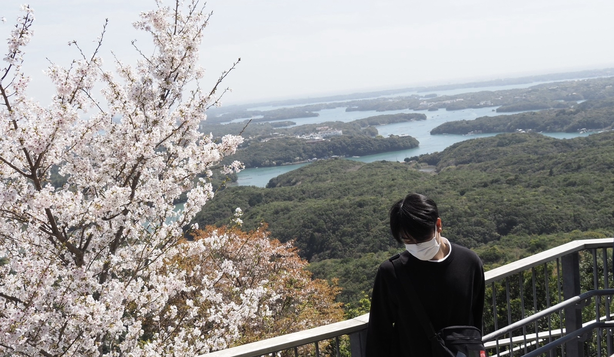
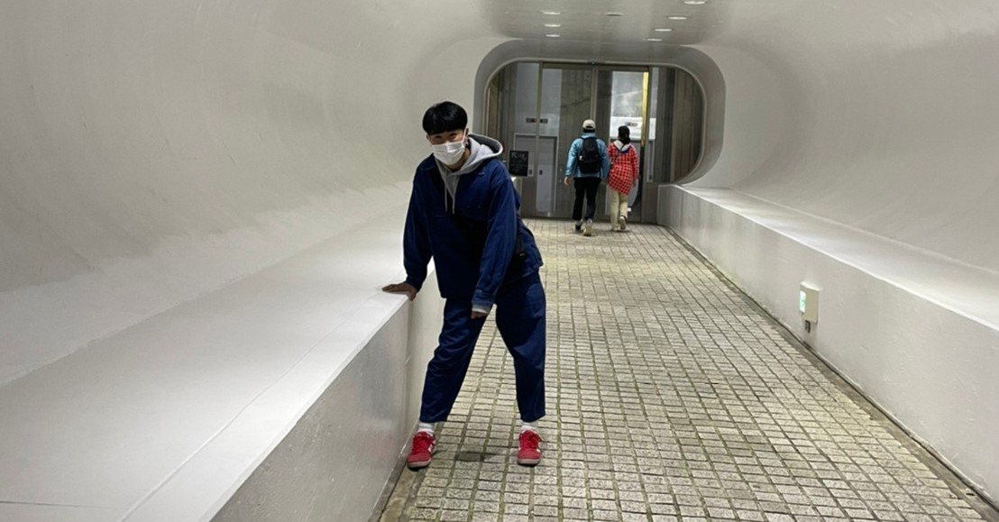

My Hobby
- Soccer(YokohamaF・Marinos/SCSagamihara/ManchesterCity)
- Baseball(ChunichiDragons)
- Music(BiSH/ExWHYZ/Da-iCE/ASMI/NISINA)
- YouTube(TokaiOnAir)



神奈川大学経営学部在籍。道用ゼミ所属。
普段は経営学部で国際経営やマーケティングなどを学び、XBPではデジタルファブリケーションを使用し、物を作りをしたり、プログラミングをしてみたり、事業計画をしてみたりと幅広く活動中。
授業がない日やオンライン授業の日は家で授業を受け、寝て、寝る。
部活やサークルに所属しておらず、大学にあまり友達がいない。
小学生ではサッカーに取り組む。
中学生でもサッカーに取り組む。
高校入学前に一度サッカーから離れたがすぐに再開し、
週4サッカー、週2アルバイトという生活の中でも高校生活の途中で奇跡的に勉強をし始める。
大学入学。25分に1本しか来ないローカル田舎電車に乗り大都会みなとみらいに通い早2年。なんとか頑張ってる。
こんにちは。rei37です。れいっていいます。
37はあまり意味ないです。
はたちの普通な大学生です。かっこつけたホームページです。
よろしくお願いします。
あ、noteやってます。
noteココ